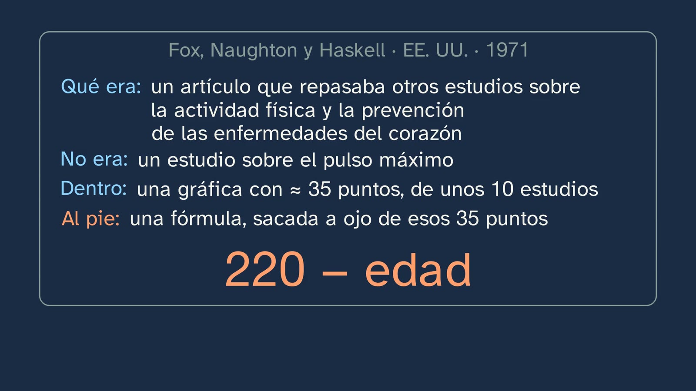
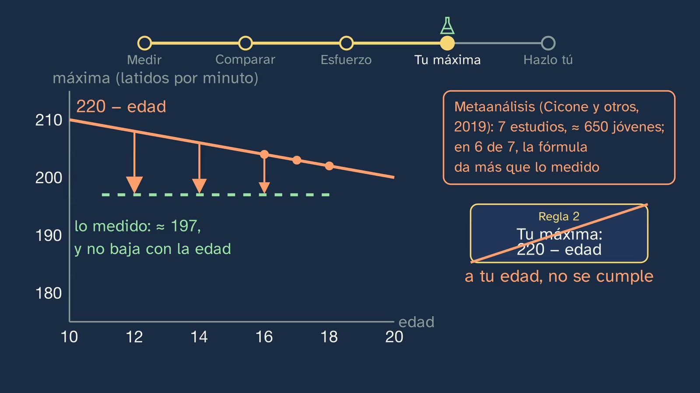
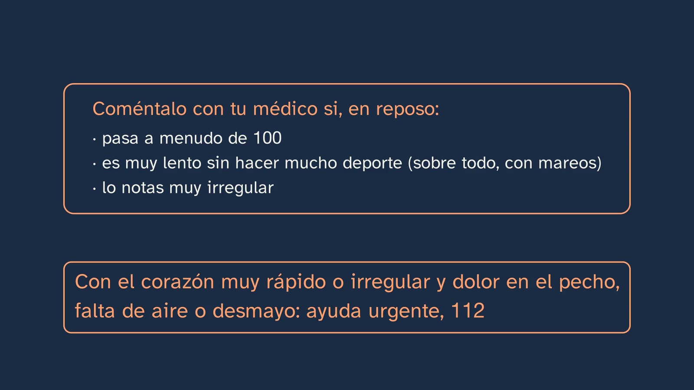
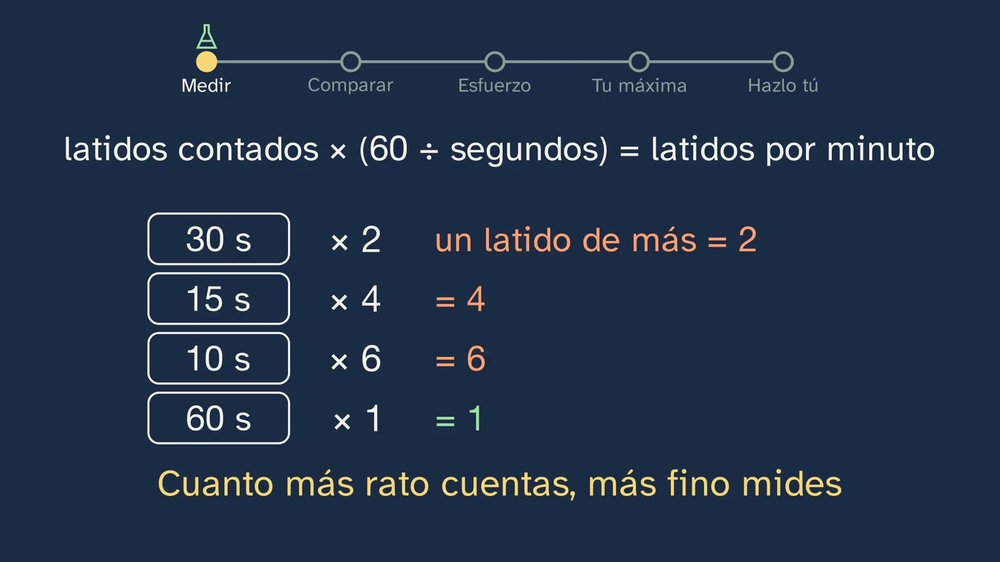
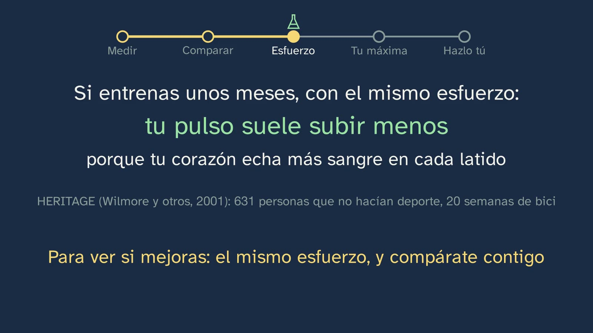
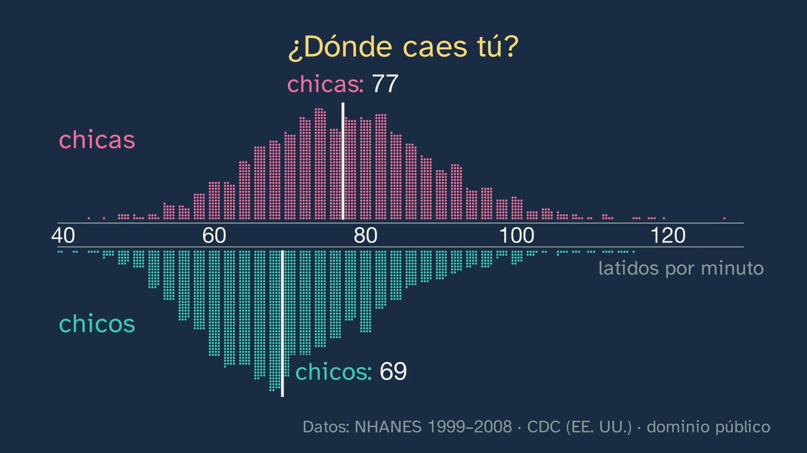
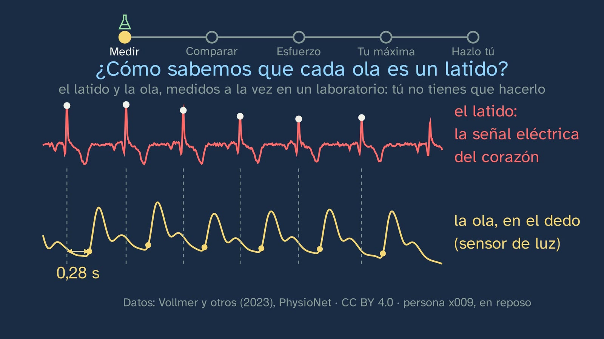
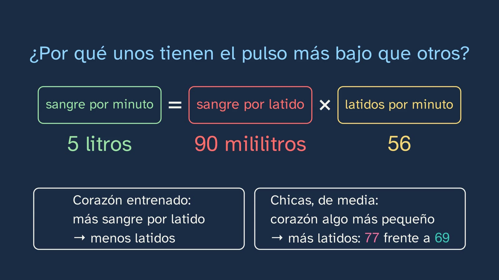

Your pulse, your body's first data point
In a nutshell
This is the channel's first body lab: students measure themselves during the video, which acts as their stopwatch and metronome, and compare their number with real data from boys and girls their age. Two rules that you hear a thousand times are put to the test: "at rest, normal is 60 to 100" and "your maximum is 220 minus your age".
The class opens with what they already know about a trained heart (it beats more slowly at rest) and the solutions to class 1. The hook is where 220 − age came from: from a 1971 review on the prevention of heart disease (Fox, Naughton and Haskell), with about 35 points from around ten studies and the formula, drawn by eye, at the foot of a graph whose authors warned that no line represented the data well. In 2002, Robergs and Landwehr calculated the line for those same points, and it did not come out as 220 − age.
Then, measuring. What it is you feel: a pressure wave that travels along the wall of the arteries, more than ten times faster than the blood; the class proves it with the electrocardiogram and the pulse wave in the finger of a real person, measured with the same clock (in that person, the wave arrives 0.27 s after each beat). How to take it, at the wrist and in the neck, and why that way. And the first measurement, 30 s × 2, with the video as stopwatch, and why the time you count decides the error.
Comparing. 4,493 young people aged 16 to 19 from the NHANES survey (CDC, United States), one by one: the gaps between columns left by the method (they counted 30 s × 2, like the student), the medians (77 for girls and 69 for boys) and the 60-to-100 rule against the data: below 60 are more than 1 in 10 boys and about 5 in 100 girls, healthy young people as far as could be checked. The rule is "the clinical consensus definition", an agreement for the clinic. The heart's calculation (blood per minute = blood per beat × beats per minute) explains why a trained heart usually beats more slowly and why girls, on average, have a somewhat faster pulse.
The effort, if students want to and adapted: 30 squats in 45 s (the effort of the Ruffier test, without its index), with the pace set by the video; the pulse right afterwards (15 s × 4) and a minute later, with a clock on screen and a bet in between; why it goes up and why it comes down, and what changes with training: with the same effort, the pulse usually goes up less (Surgeon General, 1996; HERITAGE, Wilmore et al., 2001).
The maximum. What it is, why you can't measure it on your own, and rule 2 put to the test: the formula drops one beat per year, and what has been measured in teenagers (about 197 on average; Gelbart et al., 2017) does not drop; that is why, in 6 of the 7 studies in the meta-analysis by Cicone et al. (2019; 648 young people), the formula gives more than what was measured: at 16, about 4 beats; with younger children, somewhat more (about 7 at ages 11–13 in most of the meta-analysis studies, and 9 in Gelbart at 13.7). Tanaka (208 − 0.7 × age) is better on average, but it was built with adults; and for each person, any formula can be off by up to about 17 beats (Gelbart et al., 2017: almost all between 180 and 214). The typical mistake: "220 − age is your maximum". The close: the two rules corrected, what cannot be concluded, the "Do it yourself" and the puzzle for class 3: if your maximum can only be measured by going to exhaustion, how do you measure your fitness without hurting yourself?
Objective. By the end, students will be able to take their pulse at rest and after a gentle effort, know whether it is normal for their age, estimate their maximum heart rate with a formula and explain why a formula gives the average of lots of people and not their own number.
For readers outside Spain: the Bachillerato is the last two years of secondary school (ages 16–18); it follows ESO, the four years of compulsory secondary education (ages 12–16). Physical Education is a core subject, taken by every student in the first year of Bachillerato. The BOE is Spain's Official State Gazette, where every law and decree is published. Spain is divided into seventeen autonomous communities (regions), plus the autonomous cities of Ceuta and Melilla; each completes the national curriculum with its own, and this sheet mentions those of Castile and León and Catalonia. NHANES is the US National Health and Nutrition Examination Survey. The video is in Spanish, with English subtitles. Spanish documents (the decrees and the regional curricula) are quoted in our translation; English sources are quoted in the original. Decimals are written here with a point (0.27), not with the Spanish comma.
Curriculum
Spain's Royal Decree 243/2022, Physical Education, a core subject in the first year of Bachillerato. Quotations checked in the lab's copy of the BOE's consolidated text (checked on 05/10/2026, when the topic was designed). Our translation of the official Spanish text.
| Element | What the decree says | Where the class works on it |
|---|---|---|
| Core knowledge (block A, "Active and healthy life", physical health) | "Self-assessment of physical and coordination capacities (as a prerequisite for planning): techniques, strategies and measuring tools." | The whole class: a measuring tool (the pulse), with its technique (where and how to take it, 5:39), its strategy (how long to count and why, 7:39 and 15:02) and its comparison with data (8:30–11:12) |
| Specific competence 1 | "To internalise the development of an active and healthy lifestyle, planning their physical activity responsibly and consciously on the basis of personal self-assessment according to scientific and assessable parameters…" | Self-assessment with a scientific and assessable parameter: your pulse, measured properly and compared with people your age, not with a rule |
| STEM2 descriptor (of CE1) | "… using appropriate tools and instruments, appreciating the importance of precision and truthfulness and showing a critical attitude towards the scope and limitations of the methods used." | The precision of counting 60, 30 or 15 s (7:39); the method that shows in the data (9:33–9:47); the scope and limits of a formula (17:37–20:18) and of each study (their study cards, with "what it can't tell us") |
| Criterion 1.1 | "To plan, design and put into practice autonomously a personal physical activity programme […] evaluating the results obtained." | The measurable starting point for the topic 3 programme: your resting pulse and your three numbers with the same effort, to be repeated in a few months (21:20) |
| Criterion 1.2 | "To incorporate autonomously, and according to their personal preferences, the processes of body activation, self-regulation and pacing of effort…" | The pulse as a measure of effort: how it goes up and how it comes down (12:53–16:28); the maximum, "to know how hard you're working, and pace your effort" (16:59) |
| Criterion 1.4 | "… applying with autonomy and independence scientific criteria of validity, reliability and objectivity to the information received." | Two pieces of information received, put to the test with data: the 60-to-100 rule (10:47–11:12) and 220 − age (2:41–3:17 and 17:37–20:05) |
The decree does not name the pulse, or any formula. They are how the channel makes "techniques, strategies and measuring tools" concrete (topic sheet, section "Why this topic, and this way"). Castile and León asks in the first year of Bachillerato for "different mechanisms for controlling intensity", and Catalonia places in ESO "heart rate as an indicator of intensity and recovery": one student may bring the pulse from ESO and another may not, and the class teaches it from scratch.
What students need to bring. From ESO, the "monitoring of results and basic physiological variables" (years 3 and 4) and the "scientific criteria of validity, reliability and objectivity" (criterion 1.5 in years 3 and 4); from Biology and Geology, the basic anatomy and physiology of the circulatory system. For the heart's calculation, multiplying is enough.
How the class is built
Video chapters
| Part | What happens | Why this way |
|---|---|---|
| What you already know and the solutions | What happens to a trained heart (0:25, pause). The three solutions from class 1, each with its exercise (0:49–2:04) | Retrieval (Roediger and Karpicke, 2006) with an idea the class will use: today it explains why it beats more slowly |
| Everyone's formula | Isidora poses the hook (2:31); the card of the 1971 review and what its authors wrote at the foot of their graph; the 2002 reanalysis (2:41–3:17) | The study card before the result (Jeff Nippard's technique): who, how much data, how, and what it was not |
| The mission | Two rules, put to the test, in five steps, with their route shown at the top (3:52–4:13) | A lab with its hypothesis in view (ADR-116): the cards with the two rules come back at each step |
| Measuring | The wave of each heartbeat (diagram, 4:32) and its proof with real data (5:05); the wrist and the neck (5:39–5:57); the first count, with the video as stopwatch (6:35–7:25); why the time decides the error (7:39) | "How do we know?": the wave can be seen arriving 0.27 s after the beat, on the same device. Measure before comparing |
| Is my pulse normal? | The bet (56: fine or worrying?, 8:08); the NHANES card (8:30–8:54); 4,493 dots; the gaps left by the method (9:33–9:47); the medians and "where do you fall?" (10:05); the rule against the data (10:47–11:12); when to see a doctor (11:33) | Predict before seeing; each person, a dot, and what is typical emerges from them (The Pudding's technique); students look for their own place |
| Why not all the same? | The heart's calculation, empty and then with live data (11:54); the trained heart and girls (12:26) | Thinking about what is calculated (ADR-099): reading the equation, and what happens if the blood per beat grows |
| A gentle effort | The real squat (CMU), adaptable and with its way out (12:53–13:27); 30 in 45 s at the video's pace (13:46); 15 s × 4 right afterwards and a minute later, with a clock and a bet in between (14:41–15:34); your drop against your bet (15:56); why it goes up and why it comes down, and what changes with training (16:04–16:28) | The video is the instrument: the second count starts one minute after stopping. The practical part is suggested, never imposed (ADR-119) |
| Your maximum heart rate | What it is and why you can't measure it on your own (16:59); the empty form 220 − □ and what its slope says (17:37); does it drop one beat per year? (17:56, pause); what has been measured in teenagers (18:11–18:41); Tanaka (19:06); you are not the average (19:38) | The idea and the data, in two stages; once slowly (16 years old) and the rest at speed |
| The typical mistake and the conclusion | "220 − age is your maximum", taken apart; if it has to be estimated, Tanaka with its margin (20:05–20:18); the two rules corrected and what cannot be concluded (20:38–21:04) | The mistake, in plain view (Muller et al., 2008) |
| Do it yourself and practice | The experiment at home, if they want to (21:20); the public data (21:54); the summary, three exercises, the open question and the puzzle for class 3 (22:08–23:29) | Spacing and self-assessment (CE1) |
Bridges with other subjects. Mathematics: the median versus the mean; the slope of a line ("−1 beat per year" versus "−0.7"); the difference between the two formulas, 12 − 0.3 × age, which becomes zero at 40 (Tanaka, 2001, p. 155); regression and its standard error (the 2002 reanalysis). Biology, Geology and Environmental Sciences: the circulatory system, cardiac output and the autonomic nervous system (the vagus and the sympathetic nerves). Physics and Chemistry: a wave that travels much faster than the medium that carries it; models and their limits.
A plan for a 50-minute lesson
Designed for watching in the sports hall with a projector, because the video asks students to move. If the video is watched at home, as a flipped class, the whole session can be lab work (the activity below).
| Minutes | What is done |
|---|---|
| 0–3 | No video. "Before you start", on the worksheet: how many beats they think they have at rest and what they think their maximum is. Just for themselves. |
| 3–12 | Video up to 6:43. Everyone seated: the first count, with the video. Each student notes their number in the "Your lab" table. |
| 12–22 | Video up to 12:53. Stop at 8:08 (the bet on 56, by show of hands) and at 10:05 (where do you fall?). |
| 22–30 | The effort, with the video (12:53–15:34): those who want to and can, standing; the rest, watching and taking notes. The two counts. |
| 30–40 | Video to the end. Stop at 17:56 (does it drop one beat per year?). |
| 40–50 | In pairs: each student's three numbers, the drop in one minute and the maximum with two formulas (exercise 2), without showing them to anyone else. Sharing the method, never the numbers. |
Typical mistakes and how they are handled
- "220 − age is your maximum." It is the formula in almost every handbook. It did not come from an experiment: Fox, Naughton and Haskell (1971) gave it in a figure caption in a review, drawn by eye over about 35 points from around ten studies, and wrote that "no single line will adequately represent the data" (according to Robergs and Landwehr, 2002, p. 4, who quote the whole caption: "The formula maximum heart rate = 220 − age in years defines a line not far from many of the data points"). Robergs and Landwehr fitted a line to those same points: 215.4 − 0.91 × age, with a standard error of 21 beats. In under-18s, the meta-analysis by Cicone et al. (2019; 7 articles, 648 young people) finds it above what was measured in 6 of the 7, and by 12.4 beats on average (± 16.2). The class does not give that average: the studies are very different from each other (I² = 94.6%), the quality of each study explains most of the difference (R² = 57.8%) and the average is dragged by one study with very low measured maximums (Colantonio and Kiss, 2013: 178–184). At 16, the difference is smaller (204 versus about 197–201 measured on average in teenagers), because the underlying problem is the slope: a teenager's maximum barely changes with age (Gelbart et al., 2017: in 433 athletes aged 13.7 ± 2.1, age did not predict it), and the formula makes it drop one beat per year. The class takes it apart at 17:37–20:05.



- "Below 60, something is wrong." The 60-to-100 rule is the "clinical consensus" definition (Ostchega et al., 2011, pp. 2–3), useful in the clinic. In NHANES, 13.5% of boys aged 16 to 19 are below 60 (weighted; 382 of 2,413 in the sample), and 4.9% of girls (97 of 2,080). The same report cites a revised guideline, 50 to 90. What does call for seeing a doctor, at 11:33.


- "Tanaka is the right one." It is better on average in under-18s (Cicone et al., 2019: −2.7 beats), but it was built with adults (Tanaka et al., 2001: studies with "adult subjects"; laboratory, ages 18 to 81), and in under-18s it only gets the average right. What is solid is something else: the maximum varies a lot from one person to another. In 433 young athletes, 197 ± 8.6 on average, and almost all between 180 and 214 (± 2 standard deviations; Gelbart et al., 2017); in adults, Tanaka gives a deviation of about 10 beats around its line (p. 155). No formula that only looks at age can know where each person falls. The 2019 meta-analysis advises Tanaka only "if the use of age-based equations cannot be avoided".

- Counting 10 or 15 s at rest "to go faster". One extra beat weighs 6 or 4 beats per minute (7:39). At rest, better 30 s or a whole minute; after an effort, the opposite: straight away and for 15 s, because the pulse starts to drop when you stop (Nuffield Foundation, "Heart rate"; MedlinePlus). Even so, the number comes out somewhat below what you had while moving (Bell and Bassey, 1996, British Journal of Sports Medicine, 30, 48–52).

- "The more my pulse drops in a minute, the fitter I am." It is not that simple. A review does not support it as a rule: of five cross-sectional studies, three found it faster in trained people and two did not (Daanen et al., 2012). What is well established is that, after training, with the same effort the pulse goes up less and each beat pumps out more blood: the Surgeon General's report records it (1996, p. 71, "posttraining heart rate is decreased at rest and during submaximal exercise") and HERITAGE measured it in 631 sedentary people aged 17 to 65 after 20 weeks of cycling (Wilmore et al., 2001: "significant decreases in HR […] and significant increases in SV […] at 50 W"). The class puts it like this at 16:28: to see if you are improving, the same effort, and compare yourself with yourself.

- The Ruffier index as a measure of fitness. The class uses only its effort, not the index, (P0 + P1 + P2 − 200) / 10. Its validity has been little studied: the few studies that compare it with maximal oxygen uptake are small and find it unreliable (Sartor et al., 2016; Bruggeman et al., 2020), so it cannot tell us anything about anyone's fitness. And its rating scales change from one Spanish source to another. Good material for class 3, on the validity of tests.
- Taking the pulse with the thumb, or pressing both sides of the neck. The thumb has its own pulse, which is confusing (Clínica Universidad de Navarra; HealthLinkBC). In the neck, never both sides at once, because it reduces the blood reaching the head (MedlinePlus; CUN); and gently, because the baroreceptors of the carotid sinus slow the heart down if they are pressed (CUN).
Questions and solutions
Stop and think (in the video)
- What happens to a trained heart? (0:25) It gets a little bigger inside, pumps out more blood with each beat and, at rest, usually beats more slowly (class 1). Today it is explained with the heart's calculation (11:54–12:26).
- Someone your age, healthy, who gets 56: fine or worrying? (8:08) It can be perfectly normal: more than 1 in 10 boys aged 16 to 19 are below 60 (10:47). What calls for seeing a doctor is something else (11:33).
- Why are there gaps between the columns? (9:33) Because they counted 30 s and multiplied by 2: all the pulses come out even (9:47). In the data nobody has 71, although in real life someone can.
- Where do you fall? (10:05) Against the medians of 77 (girls) and 69 (boys). Nobody has to say it out loud.

- How much will your pulse drop in a minute: 10, 20 or 40? (15:19) There is no single answer: it is each student's own, who subtracts their two counts and compares the result with their bet (15:56). What is always seen is the shape of the drop: fast in the first minute and then more slowly (Peçanha et al., 2014).
- Does the measured maximum drop one beat per year at 12, at 14 and at 17? (17:56) No: in teenagers it is around 200 and barely changes with age (18:11).
Practice (the solutions open class 3)
- A 16-year-old girl has 84 at rest and a boy, 60: say where each one falls compared with people their age, and whether either should be worried. The girl is above the median for girls aged 16 to 19 (77), but within the usual range: in NHANES, one in three girls has 84 or more (33.6%, weighted). The boy is below the boys' median (69), and 13.5% of boys are below 60: that is normal too (calculations with
materiales/pulsos-16-19.csv). Neither should worry about that number alone: what calls for seeing a doctor is a resting pulse that is often over 100, very slow without doing much sport and with dizziness, or very irregular (11:33). Criteria: compare each one with their group (girls with girls, boys with boys) and not with the 60-to-100 rule, and don't confuse "far from the median" with "abnormal". - Work out your maximum with 220 − age and with Tanaka, and say how many beats separate them. At 16: 204 and 196.8 (≈ 197), 7.2 beats; at 17: 203 and 196.1, 6.9 beats. In general, (220 − a) − (208 − 0.7a) = 12 − 0.3a: they get closer the older you are and cross at 40 (calculations run). For extra credit: neither is their number; for each person, up to ±17.
- At rest, sitting down, count your pulse for 15 s and multiply by 4, and straight afterwards for a whole minute: why might you not get the same result? Counting 15 s, one beat more or less is 4 per minute; counting 60, just one. Besides, the pulse varies a little from moment to moment (with breathing, for example). It can come out the same, by chance, and that does not make 15 s just as precise. Criteria: the factor (× 4, × 1), the error that gets multiplied, and that a single matching measurement proves nothing.

Keep thinking. If a formula can be 17 beats off for you, what is it good for? It has no textbook answer. Leads for the debate, without closing it: a formula is useful when you can't measure, to start with an order of magnitude (and with its margin); it is more useful for a group (a coach with 30 students) than for one person; and it is useful for knowing that you need to measure it if it really matters. You can also discuss what happens if someone trains with zones calculated from a maximum 17 beats above their own. Topic 3 comes back to intensity zones.
A classroom activity
Your lab, in the sports hall (about 20 minutes, in pairs; it works on CE1 and criteria 1.2 and 1.4).
- Seated and calm for 4 minutes, as in NHANES. Each student takes their pulse at the wrist, 30 s × 2 and 60 s; their partner takes it at the same time on the other arm. Do they match?
- Those who want to and can: 30 squats in 45 s with a metronome at 80 beats per minute, going down on one beat and up on the next (as in Sartor et al., 2016), or with the video, from 13:46; the pulse, 15 s × 4, right after finishing and a minute later. Those who don't, keep time and take notes.
- With the class table (
materiales/pulsos-16-19.csv, below), the median and each student's percentile in a spreadsheet, without writing names. - Discussion: what are we saying with our number, and what can't we say? What would it take to really measure the maximum, and why isn't it done alone at home?
For teachers: nobody shows their numbers or compares themselves with anyone; what is discussed is the method. Anyone with an injury or a health problem, or who doesn't want to, keeps time. If someone feels dizzy, sit them down and follow the school's protocol.
Open resources: data and guides
| Resource | What it covers | How to use it in class |
|---|---|---|
materiales/pulsos-16-19.csv (next to this sheet) |
The 4,493 resting pulses from NHANES 1999–2008 for ages 16 to 19, person by person, with their sex and sample weight. Rebuilt by the channel with the exclusions of Ostchega et al. (2011): this gives 2,080 girls and 2,413 boys against the 2,082 and 2,411 published, and the percentiles, within one beat or less | Medians, percentiles and the share below 60 in a spreadsheet; why they are all even |
| NHANES, CDC (https://wwwn.cdc.gov/nchs/nhanes/) | The US health survey, with its public data (public domain) | Looking up other variables: blood pressure, height, weight |
| Ostchega et al. (2011), NHSR 41 (https://www.cdc.gov/nchs/data/nhsr/nhsr041.pdf) | Reference values for the resting pulse by age and sex | Reading a real percentile table |
| MedlinePlus in Spanish, «Pulso» ("Pulse") (https://medlineplus.gov/spanish/ency/article/003399.htm) | How to take the pulse, its precautions and the usual values | A reliable health source, in Spanish |
| PhysioNet, Vollmer et al. (2023) (https://doi.org/10.13026/wce5-fj54, CC BY 4.0) | Electrocardiogram and finger pulse wave, on the same clock, from 13 adults | Measuring the delay of the wave (for those who know some programming) |
Notes for teachers
- "Healthy young people, as far as could be checked." NHANES excluded prescription medicines that change the pulse, infections, pregnancies, irregular pulse and abnormal thyroid function, but it could not exclude over-the-counter medicines, and the report itself asks readers not to infer that everyone was healthy (Ostchega et al., 2011, pp. 11–12).
- The wave. "More than ten times faster than the blood" (Mynard et al., 2020): in a young person's aorta, the wave travels at about 5–6 m/s (Reference Values for Arterial Stiffness' Collaboration, 2010) and the blood, on average, at about 0.27 m/s (OpenStax). At 5–6 m/s and with less than a metre to the hand, the wave arrives in a fraction of a second. In the person from the PhysioNet recording (Vollmer et al., 2023), 0.27 s from the electrical signal to the finger (calculated by the channel; the pulse oximeter's filter may lengthen it somewhat).

- Why the pulse drops with training is still debated (the vagal brake or the heart's own pacemaker: Reimers et al., 2018). The class only uses the calculation: if at rest the same blood per minute is needed and each beat pumps out more, fewer beats are enough (Surgeon General, 1996, p. 71: resting output stays "essentially unchanged").
- Girls. Their resting pulse is somewhat higher on average; a somewhat smaller heart, which pumps out less blood per beat, is one of the reasons (British Heart Foundation), and there are signs of differences in the pacemaker itself (Bernal and Moro, 2006, Revista Española de Cardiología, 59(6), 609–618).

- The neck. The class does not teach taking the carotid pulse in depth: it names it, with its precautions, and suggests the wrist. Anyone with diagnosed plaques in the carotid arteries should not take their pulse there (Mayo Clinic).
What the class leaves out, and why
- Intensity zones (percentage of the maximum and of the reserve, Karvonen, perceived exertion): they go to topic 3, class 2, where intensity is programmed (topic sheet).
- The Ruffier index: its effort is used, not its index, because of its doubtful validity (mistake 6).
- Watches and apps: class 4.
- Heart rate variability and the electrocardiogram: the electrocardiogram is only used to see when the heart beats.
Sources
Curriculum
- Royal Decree 243/2022, annex II, Physical Education, consolidated text (BOE, in Spanish): https://www.boe.es/buscar/act.php?id=BOE-A-2022-5521
The resting pulse
- Ostchega, Y., Porter, K. S., Hughes, J., Dillon, C. F. and Nwankwo, T. (2011). Resting pulse rate reference data for children, adolescents, and adults: United States, 1999–2008. National Health Statistics Reports, 41. Public domain. https://www.cdc.gov/nchs/data/nhsr/nhsr041.pdf
- Fleming, S. et al. (2011). Normal ranges of heart rate and respiratory rate in children from birth to 18 years of age. The Lancet, 377, 1011–1018 (web appendix, table 5).
The maximum
- Fox, S. M., Naughton, J. P. and Haskell, W. L. (1971). Physical activity and the prevention of coronary heart disease. Annals of Clinical Research, 3(6), 404–432 (PubMed 4945367).
- Robergs, R. A. and Landwehr, R. (2002). The surprising history of the "HRmax = 220 − age" equation. Journal of Exercise Physiology online, 5(2), 1–10.
- Tanaka, H., Monahan, K. D. and Seals, D. R. (2001). Age-predicted maximal heart rate revisited. JACC, 37(1), 153–156.
- Cicone, Z. S. et al. (2019). Research Quarterly for Exercise and Sport, 90(3), 417–428.
- Gelbart, M. et al. (2017). Clinical Journal of Sport Medicine, 27(2), 139–144. Mahon, A. D. et al. (2010). Research Quarterly for Exercise and Sport, 81(4), 466–471.
The body
- OpenStax, Anatomy and Physiology 2e, §19.4 and §20.2 (CC BY 4.0). Mynard, J. P. et al. (2020), Frontiers in Physiology, 11, 1085. Reference Values for Arterial Stiffness' Collaboration (2010), European Heart Journal, 31, 2338–2350.
- U.S. Surgeon General (1996), Physical Activity and Health, ch. 3. Reimers, A. K., Knapp, G. and Reimers, C.-D. (2018), Journal of Clinical Medicine, 7, 503. British Heart Foundation, "Heart rate: what's normal and how to check it".
- Wilmore, J. H. et al. (2001). Cardiac output and stroke volume changes with endurance training: the HERITAGE Family Study. Medicine and Science in Sports and Exercise, 33(1), 99–106. https://doi.org/10.1097/00005768-200101000-00016
- Cole, C. R. et al. (1999), NEJM, 341, 1351–1357. Daanen, H. A. M. et al. (2012), IJSPP, 7, 251–260.
- How to take it: MedlinePlus, «Pulso» ("Pulse"); Clínica Universidad de Navarra, Diccionario médico, «pulso carotídeo» ("carotid pulse"); HealthLinkBC, "Taking a pulse"; Nuffield Foundation, "Heart rate". When to see a doctor: Mayo Clinic; British Heart Foundation; NHS.
The Ruffier test
- Complutense University of Madrid, Physiology practical «Pruebas de esfuerzo» ("Exercise tests"). Sartor, F. et al. (2016), PLoS One, 11, e0168154 (data in Dryad, CC0). Bruggeman, B. S. et al. (2020), PLoS One, 15, e0238863.
Data and movement
- Vollmer, M., Bläsing, D., Reiser, J. E., Nisser, M. and Buder, A. (2023). PhysioNet. https://doi.org/10.13026/wce5-fj54 (CC BY 4.0).
- CMU Graphics Lab Motion Capture Database (subject 13, trial 29): "The data used in this project was obtained from mocap.cs.cmu.edu. The database was created with funding from NSF EIA-0196217". Figures: MakeHuman (CC0). Photo of the pulse at the wrist: U.S. Air Force, Staff Sgt. Jeanette Copeland (2004), public domain. Illustration of the pulse in the neck: BruceBlaus, Wikimedia Commons, "Pulse (Neck)", CC BY-SA 4.0 (cropped and with the background removed).
About this class
Isidora is an illustrated character and her voice is synthetic. The script was written by an AI (Claude, by Anthropic), reviewed by an independent agent with the channel's rubric and approved by a person. Every fact has been checked in two sources or in the original; the reports, with each quotation, are in the channel's repository. This English version was translated by the same AI and reviewed by a person. If you find a mistake, tell us in the Ágora: learning also means correcting.
How to cite this sheet
GinCol Lab (2026). Your pulse, your body's first data point. GinCol Lab teacher sheet: Physical Education · 1st year of Bachillerato · Your body, your lab · Class 2 of 4. https://gincollab.github.io/aula/en/educacion-fisica/t01-c2/. CC BY 4.0.
GinCol Lab teacher sheet · CC BY 4.0 · Source and errata